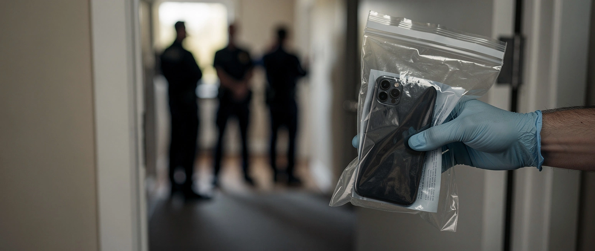

Ein Wort, sieben Razzien

An einer Schule in Holzkirchen wird ein Schüler wegen seiner Hautfarbe beschimpft. Was danach folgt, sagt weniger über die Schüler als über den Staat.
Die Eltern erstatten Anzeige. Die Ermittler finden angeblich Hinweise auf weitere mutmaßlich rechte Straftaten. Das Fachkommissariat Staatsschutz übernimmt, die Einheit für Extremismus und Terror. Das Amtsgericht München ordnet Durchsuchungen an. Am Mittwoch stehen Beamte in sieben Wohnungen und tragen die Handys von Fünfzehn- bis Siebzehnjährigen heraus. Bewiesen ist nichts. Es sind Verdächtige, keine Verurteilten, und die Unschuldsvermutung gilt auch für Jugendliche, deren Gesinnung dem Staat verdächtig erscheint.
Halten wir das fest: Für einen Verdacht aus der rechten Ecke fährt der Staat den Staatsschutz und den Ermittlungsrichter auf.
Die Härte kennt eine Richtung. Wird umgekehrt ein Deutscher wegen seiner Herkunft angegangen, greift ein anderer Grundsatz. „Darum gibt es keinen Rassismus gegen Weiße“, titelt die ZEIT; der WDR-Kanal quarks erklärt, Rassismus setze Macht voraus und könne Weiße deshalb nicht treffen. Ein Motiv, das in die eine Richtung den Staatsschutz ruft, existiert in die andere per Definition nicht.
Auf dem Papier führt die Polizei zwar seit 2019 die Kategorie „deutschfeindlich“, 432 Fälle allein 2024. In der Praxis bleibt sie eine Fußnote. Ein Fachkommissariat wird dafür nicht gebildet.
Das ist der Maßstab. Nicht die Schwere entscheidet, wie hart der Staat reagiert, sondern die politische Färbung. Ein rassistisches Wort ruft in die eine Richtung sieben Durchsuchungstrupps, in die andere ein Achselzucken und eine Definition.
Mehr dazu: Sogar die UN sagt es · Gewählt, aber nicht wählbar